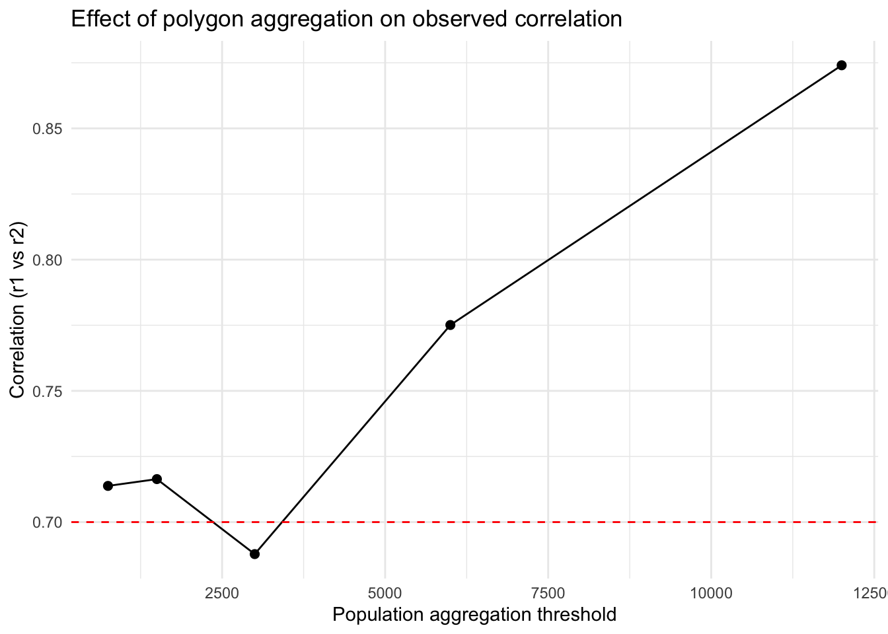
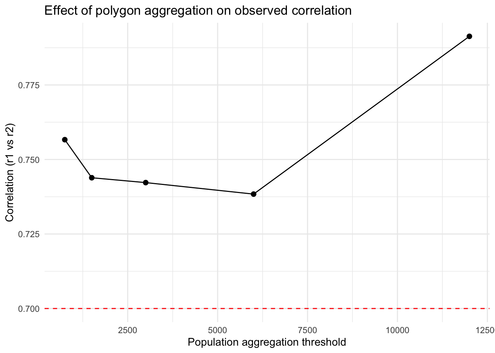
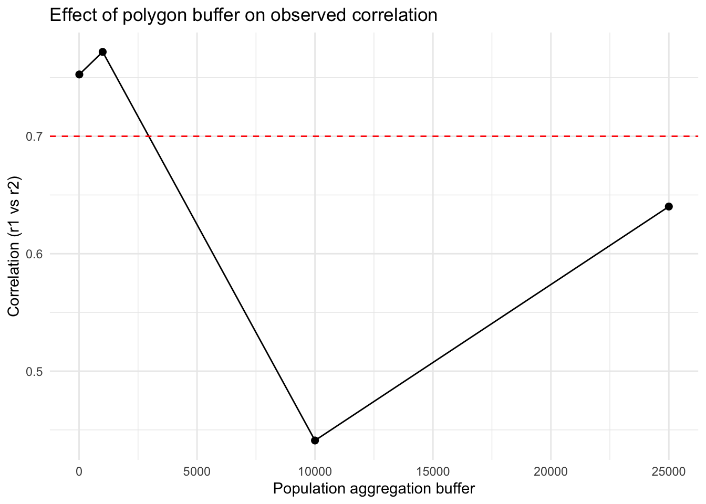

Practice spatial operations to modify vector and raster data
Practice simulating data to explore ideas
Explore the Modifiable Areal Unit Problem with known data.
Getting Started
We’ll start like we usually do, by loading packages. There are a few new packages here. The mvtnorm packages is a way for generating random numbers from a multivariate normal distribution (like rnorm). The patchwork package provides a lot of functionality for making multipanel plots. We’ll also source our utility function.
Code
library(sf)
Linking to GEOS 3.13.0, GDAL 3.8.5, PROJ 9.5.1; sf_use_s2() is TRUE
── Conflicts ────────────────────────────────────────── tidyverse_conflicts() ──
✖ tidyr::extract() masks terra::extract()
✖ dplyr::filter() masks stats::filter()
✖ dplyr::lag() masks stats::lag()
ℹ Use the conflicted package (<http://conflicted.r-lib.org/>) to force all conflicts to become errors
Code
library(patchwork)
Attaching package: 'patchwork'
The following object is masked from 'package:terra':
area
There are two different vector datasets we’re going to use for this example. The first (pa.shp) is our old friend, the Purple Air sensors. This is a POINT dataset. The second (blockgroupPop.shp) contains a number of POLYGONS for the Census block groups in Ada, Gem, Canyon, Elmore, and Owyhee counties in Idaho along with an attribute for their total population as of the 2020 Census. We’ll load those here and take a quick look.
In order to explore how MAUP plays out in an analysis, we need some data where the relationship between the two datasets is known. Simulation is a great way to gain some intuition for how things work without getting trapped by the subtleties and imperfections of a dataset. Plus, if you’re ever fitting complicated statistical models, running them first on data where you know the relationships (because you made them) is a great way to make sure your model is well specified.
There are a few things happening here, so I’ll walk you through it. First, we set a “seed” (set.seed()) - this ensures that the random numbers you generate on your computer are the same as those generated on my computer. It also ensures that no matter how many times you run this, you should get the same outputs. This is great for reproducibility, but not necessarily for sensitivity (where we want to make sure that our results aren’t just a function of the one set of random numbers we drew).
Next we have to create a raster template that we can fill in with the random data we generate. You’ll notice that we used rast (the same function we use to read in existing raster data) to do this and that we use the CRS (crs()) and extent (ext()) of our population_data shapefile. To make sure all of this works in the terra structure, we convert (temporarily) our population_data object to a SpatVector (using vect()). Finally, we use ncell() to count the total number of cells in our template raster so that we can make sure we draw enough values.
Now we want to create some data that is random, but correlated. We can use the multivariate normal distribution for this. It behaves similar to a regular normal distribution (which we’d specify a mean and standard deviation). The difference is that in a multivariate normal distribution, there are multiple means that are related to each other through their covariance or correlation matrices. A correlation matrix simply expresses the correlations between the variables - the diagonals are always 1 (because that is the self-correlation) and the off-diagonal cells express the correlation (or covariance depending on the structure) between the 2 variables. Here, we build this by hand by specifying Rho (the correlation coefficient). Finally, we use the rmvnorm function to generate nvall numbers from 2 different normal distributions that have covariance matrix Sigma and should have a correlation equal to Rho.
We plug these values back into our template using setValues and then double-check the results. We expect a little difference between Rho and the results of cor because of the random number generation, but it is clear that we are pretty close so we can move on.
Now that we have some data with a known relationship, we can start to experiment with the effects of aggregation. To do this efficiently, we’ll use a function. I’ve written out some of the pseudocode below, but I want to point out a few things:
In the definition of the function I’ve specified some defaults (like pop_cal = "pop" or threshold = 1000). This allows the function to run even if I don’t give those values, but they are replaced if I provide any parameters to those arguments.
There are two different methods (greedy or random) for aggregating the data. The greedy algorithm chooses the smallest polygons first, the random chooses polygons at random (subject to seed.)
We use the binary operatorst_touches to find all of the polygons touching the polygon indexed by sf_obj[[idx]] and the binary transformerst_union to combine the geometries of the neighboring polygons into a single polygon. We do this in the context of a group_by, summarize pipeline to combine both the population data and the geometries.
Let’s try it out and see how it goes. We’ll set a series of thresholds and pass them with map to create a list of sf objects. We’ll then use a second function to generate the maps. Finally, we use wrap_plots from patchwork to make a multiplanel plot.
Now that we have developed some different spatial aggregations, let’s see how that affects our conclusions about the correlation between the two datasets. We’ll use the same function above, but nest it inside another function to make this easier. You’ll notice that we first create the aggregated polygons, then we extract the values from the raster (using extract) and convert that into a table with our results.
Once we’ve got the function written, we can apply the function using map across our threshold values. You’ll notice that we use map_dfr because the outcome of our function is a single row tibble that we ultimately want this as a data.frame (hence the _dfr).
Code
# --- apply across thresholds ---results <-map_dfr(thresholds, ~corr_at_threshold(.x, polygons = population_data, "value", r1=rsts, method ="greedy"))ggplot(results, aes(x = threshold, y = correlation)) +geom_line() +geom_point(size =2) +geom_hline(yintercept = rho, linetype =2, color ="red") +theme_minimal() +labs(x ="Population aggregation threshold",y ="Correlation (r1 vs r2)",title ="Effect of polygon aggregation on observed correlation")

What if the Underlying Data is More Coarse?
You might imagine that you get data from a source that is at a coarser resolution than the process you’re actually interested in. We can mimic this situation by usingaggregate to “upscale” the underlying rasters.
Once we do that, it’s basically the same process as before, but we change the r1 argument to rsts2 instead of rsts.
results2 <-map_dfr(thresholds, ~corr_at_threshold(.x, polygons = population_data, "value", r1=rsts2, method ="greedy"))ggplot(results2, aes(x = threshold, y = correlation)) +geom_line() +geom_point(size =2) +geom_hline(yintercept = rho, linetype =2, color ="red") +theme_minimal() +labs(x ="Population aggregation threshold",y ="Correlation (r1 vs r2)",title ="Effect of polygon aggregation on observed correlation")

What if We Change Our Sampling Frame
In the previous examples, we rely on aggregation differences that arise from combining units based on their existing population. What if we have point data? We might imagine that we think our points capture some broader area of the landscape. We might also imagine that our choice of sampling frame affects the relatioiships we uncover.
We do a few new things here. First we use unary transformers like st_transform and st_crop to get our purple air sensors into the right projection and to reduce (crop) the dataset so that we’re only using the points that are within our existing study area. Then we use a final transformer, st_buffer to draw a new, circular polygon around the points with a radius equal to the dist argument. We pass a vector of buffer distances to st_buffer using map and then plot the resulting outcome.
We modify our original correlation function to deal with the buffers and return a slightly different tibble as an output.
Code
corr_at_buff <-function(polys, r1) {# extract raster values (mean within each polygon) v1 <- terra::extract(r1, vect(polys), fun = mean, na.rm =TRUE)[, -1]tibble(buff_dist =unique(polys$buff_dist),correlation =cor(v1[,1], v1[,2], use ="complete.obs"))}
Finally, we run this new function one more time to generate our comparison plot.
Code
results3 <-map_dfr(pa_buffs, ~corr_at_buff(polys = .x, r1=rsts))ggplot(results3, aes(x = buff_dist, y = correlation)) +geom_line() +geom_point(size =2) +geom_hline(yintercept = rho, linetype =2, color ="red") +theme_minimal() +labs(x ="Population aggregation buffer",y ="Correlation (r1 vs r2)",title ="Effect of polygon buffer on observed correlation")

Final Thoughts
Hopefully this exercise has illustrated the unpredictable nature of how aggregation affects the observed correlation between variables. You’ve also gotten to practice a variety of spatial operations in increasingly complicated functions.
Source Code
---title: "Using Spatial Operations to Change Geometries and Explore MAUP"---## Objectives1. Practice spatial operations to modify vector and raster data2. Practice simulating data to explore ideas3. Explore the Modifiable Areal Unit Problem with known data.## Getting StartedWe'll start like we usually do, by loading packages. There are a few new packages here. The `mvtnorm` packages is a way for generating random numbers from a multivariate normal distribution (like `rnorm`). The `patchwork` package provides a lot of functionality for making multipanel plots. We'll also `source` our utility function.```{r}library(sf)library(terra)library(mvtnorm)library(tidyverse)library(patchwork)library(googledrive)source("scripts/utilities/download_utils.R")``````{r dldata}file_list <-drive_ls(drive_get(as_id("https://drive.google.com/drive/u/1/folders/1PwfUX2hnJlbnqBe3qvl33tFBImtNFTuR")))[-1,]file_list %>% dplyr::select(id, name) %>% purrr::pmap(function(id, name) {gdrive_folder_download(list(id = id, name = name),dstfldr ="inclass10") })```## Loading the Data We HaveThere are two different vector datasets we're going to use for this example. The first (`pa.shp`) is our old friend, the Purple Air sensors. This is a `POINT` dataset. The second (`blockgroupPop.shp`) contains a number of `POLYGONS` for the Census block groups in Ada, Gem, Canyon, Elmore, and Owyhee counties in Idaho along with an attribute for their total population as of the 2020 Census. We'll load those here and take a quick look.```{r lddata}population_data <-read_sf("data/original/inclass10/blockgroupPop.shp")pa_locs <-read_sf("data/original/inclass10/pa.shp") %>%st_transform(., crs=crs(population_data)) %>%st_crop(., population_data)glimpse(population_data)plot(population_data$geometry)glimpse(pa_locs)plot(pa_locs$geometry)```## Simulating Some DataIn order to explore how MAUP plays out in an analysis, we need some data where the relationship between the two datasets **is known**. Simulation is a great way to gain some intuition for how things work without getting trapped by the subtleties and imperfections of a dataset. Plus, if you're ever fitting complicated statistical models, running them first on data where you know the relationships (because you made them) is a great way to make sure your model is well specified.There are a few things happening here, so I'll walk you through it.First, we set a "seed" (`set.seed()`) - this ensures that the random numbers you generate on your computer are the same as those generated on my computer. It also ensures that no matter how many times you run this, you should get the same outputs. This is great for reproducibility, but not necessarily for sensitivity (where we want to make sure that our results aren't just a function of the one set of random numbers we drew).Next we have to create a raster template that we can fill in with the random data we generate. You'll notice that we used `rast` (the same function we use to read in existing raster data) to do this **and** that we use the CRS (`crs()`) and extent (`ext()`) of our `population_data` shapefile. To make sure all of this works in the `terra` structure, we convert (temporarily) our `population_data` object to a `SpatVector` (using `vect()`). Finally, we use `ncell()` to count the total number of cells in our template raster so that we can make sure we draw enough values.Now we want to create some data that is random, but correlated. We can use the multivariate normal distribution for this. It behaves similar to a regular normal distribution (which we'd specify a mean and standard deviation). The difference is that in a multivariate normal distribution, there are multiple means that are related to each other through their covariance or correlation matrices. A correlation matrix simply expresses the correlations between the variables - the diagonals are always 1 (because that is the self-correlation) and the off-diagonal cells express the correlation (or covariance depending on the structure) between the 2 variables. Here, we build this by hand by specifying `Rho` (the correlation coefficient). Finally, we use the `rmvnorm` function to generate `nvall` numbers from 2 different normal distributions that have covariance matrix `Sigma` and should have a correlation equal to `Rho`.We plug these values back into our template using `setValues` and then double-check the results. We expect a little difference between `Rho` and the results of `cor` because of the random number generation, but it is clear that we are pretty close so we can move on.```{r}set.seed(42)# raster templater_template <-rast(ncol=100, nrow=100, crs =crs(vect(population_data)), extent =ext(vect(population_data)))nvals <-ncell(r_template)# desired covariance / correlation matrix (2x2)rho <-0.7sd1 <-1; sd2 <-2Sigma <-matrix(c(sd1^2, rho*sd1*sd2, rho*sd1*sd2, sd2^2), nrow=2)# draw nvals independent bivariate normalsdraws <-rmvnorm(n = nvals, sigma = Sigma) # n x 2 matrix# convert to rastersr1 <-setValues(r_template, draws[,1])r2 <-setValues(r_template, draws[,2])# quick check empirical correlation (across cells)cor(values(r1), values(r2))# plotplot(c(r1, r2))rsts <-c(r1,r2)names(rsts) <-c("var1", "var2")```## Changing AggregationNow that we have some data with a known relationship, we can start to experiment with the effects of aggregation. To do this efficiently, we'll use a function. I've written out some of the pseudocode below, but I want to point out a few things:1. In the definition of the function I've specified some defaults (like `pop_cal = "pop"` or `threshold = 1000`). This allows the function to run even if I don't give those values, but they are replaced if I provide any parameters to those arguments.2. There are two different methods (`greedy` or `random`) for aggregating the data. The greedy algorithm chooses the smallest polygons first, the random chooses polygons at random (subject to seed.)3. We use the **binary operator** `st_touches` to find all of the polygons touching the polygon indexed by `sf_obj[[idx]]` and the **binary transformer** `st_union` to combine the geometries of the neighboring polygons into a single polygon. We do this in the context of a `group_by`, `summarize` pipeline to combine both the population data and the geometries.```{r}aggregate_polygons <-function(sf_obj, pop_col ="pop", threshold =1000,method =c("greedy", "random"), seed =NULL) { method <-match.arg(method) sf_obj <- sf_obj %>%mutate(agg_id =row_number(),!!pop_col :=!!sym(pop_col))if (!is.null(seed)) set.seed(seed)repeat { below <-which(sf_obj[[pop_col]] < threshold)if (length(below) ==0) break# --- choose starting polygon ---if (method =="greedy") { idx <- below[which.min(sf_obj[[pop_col]][below])] } elseif (method =="random") { idx <-sample(below, 1) }# find neighbors nb <-st_touches(st_make_valid(sf_obj))[[idx]]if (length(nb) ==0) {warning("Polygon ", idx, " has no neighbors to merge") sf_obj[[pop_col]][idx] <- thresholdnext }# --- pick neighbor ---if (method =="greedy") { nb_idx <- nb[which.min(sf_obj[[pop_col]][nb])] } elseif (method =="random") { nb_idx <-sample(nb, 1) }# merge geometry and population sf_obj$geometry[idx] <-st_union(st_make_valid(sf_obj$geometry[c(idx, nb_idx)])) sf_obj[[pop_col]][idx] <-sum(sf_obj[[pop_col]][c(idx, nb_idx)]) sf_obj$agg_id[idx] <-min(sf_obj$agg_id[c(idx, nb_idx)])# drop merged neighbor sf_obj <- sf_obj[-nb_idx, ] } sf_obj %>%group_by(agg_id) %>%summarise(pop =sum(!!sym(pop_col)), geometry =st_union(geometry), .groups ="drop")}```Let's try it out and see how it goes. We'll set a series of thresholds and pass them with `map` to create a list of `sf` objects. We'll then use a second function to generate the maps. Finally, we use `wrap_plots` from `patchwork` to make a multiplanel plot.```{r}thresholds <-c(750, 1500, 3000, 6000, 12000) # population cutoffsaggregate_pop <-map(thresholds, ~aggregate_polygons(sf_obj = population_data, pop_col ="value", threshold = .x,method ="greedy"))plots <-map(aggregate_pop, ~ggplot(data = .x) +geom_sf(col ="red") +theme_bw())# Combine automatically into a multipanel layoutwrap_plots(plots, ncol =3)```## How Does Aggregation Affect Measured CorrelationNow that we have developed some different spatial aggregations, let's see how that affects our conclusions about the correlation between the two datasets. We'll use the same function above, but nest it inside another function to make this easier. You'll notice that we first create the aggregated polygons, then we extract the values from the raster (using `extract`) and convert that into a table with our results.```{r}corr_at_threshold <-function(threshold, polygons, pop_col, r1, method ="greedy", seed =NULL) {# aggregate polygons agg_polys <-aggregate_polygons(polygons, pop_col, threshold, method = method, seed = seed)# extract raster values (mean within each polygon) v1 <- terra::extract(r1, vect(agg_polys), fun = mean, na.rm =TRUE)[, -1]tibble(threshold = threshold,correlation =cor(v1[,1], v1[,2], use ="complete.obs"))}```Once we've got the function written, we can apply the function using `map` across our `threshold` values. You'll notice that we use `map_dfr` because the outcome of our function is a single row `tibble` that we ultimately want this as a `data.frame` (hence the `_dfr`).```{r}# --- apply across thresholds ---results <-map_dfr(thresholds, ~corr_at_threshold(.x, polygons = population_data, "value", r1=rsts, method ="greedy"))ggplot(results, aes(x = threshold, y = correlation)) +geom_line() +geom_point(size =2) +geom_hline(yintercept = rho, linetype =2, color ="red") +theme_minimal() +labs(x ="Population aggregation threshold",y ="Correlation (r1 vs r2)",title ="Effect of polygon aggregation on observed correlation")```## What if the Underlying Data is More Coarse?You might imagine that you get data from a source that is at a coarser resolution than the process you're actually interested in. We can mimic this situation by using`aggregate` to "upscale" the underlying rasters.Once we do that, it's basically the same process as before, but we change the `r1` argument to `rsts2` instead of `rsts`.```{r}rsts2 <- terra::aggregate(rsts, fact =4, method ="bilinear")cor(values(rsts2[[1]]), values(rsts2[[2]]))plot(rsts2)results2 <-map_dfr(thresholds, ~corr_at_threshold(.x, polygons = population_data, "value", r1=rsts2, method ="greedy"))ggplot(results2, aes(x = threshold, y = correlation)) +geom_line() +geom_point(size =2) +geom_hline(yintercept = rho, linetype =2, color ="red") +theme_minimal() +labs(x ="Population aggregation threshold",y ="Correlation (r1 vs r2)",title ="Effect of polygon aggregation on observed correlation")```## What if We Change Our Sampling FrameIn the previous examples, we rely on aggregation differences that arise from combining units based on their existing population. What if we have point data? We might imagine that we think our points capture some broader area of the landscape. We might also imagine that our choice of sampling frame affects the relatioiships we uncover.We do a few new things here. First we use **unary transformers** like `st_transform` and `st_crop` to get our purple air sensors into the right projection and to reduce (crop) the dataset so that we're only using the points that are within our existing study area. Then we use a final transformer, `st_buffer` to draw a new, circular polygon around the points with a radius equal to the `dist` argument. We pass a `vector` of buffer distances to `st_buffer` using `map` and then plot the resulting outcome. ```{r}pa_locs <-read_sf("data/original/inclass10/pa.shp") %>%st_transform(., crs=crs(rsts)) %>%st_crop(., population_data)buffer_dist <-c(10, 1000, 10000, 25000)pa_buffs <- buffer_dist %>%map(., ~st_buffer(x = pa_locs, dist = .x) %>%mutate(buff_dist = .x) )plots_buff <-map(pa_buffs, ~ggplot(data = .x) +geom_sf(col ="red") +theme_bw())# Combine automatically into a multipanel layoutwrap_plots(plots_buff, ncol =3)```We modify our original correlation function to deal with the buffers and return a slightly different tibble as an output.```{r}corr_at_buff <-function(polys, r1) {# extract raster values (mean within each polygon) v1 <- terra::extract(r1, vect(polys), fun = mean, na.rm =TRUE)[, -1]tibble(buff_dist =unique(polys$buff_dist),correlation =cor(v1[,1], v1[,2], use ="complete.obs"))}```Finally, we run this new function one more time to generate our comparison plot.```{r}results3 <-map_dfr(pa_buffs, ~corr_at_buff(polys = .x, r1=rsts))ggplot(results3, aes(x = buff_dist, y = correlation)) +geom_line() +geom_point(size =2) +geom_hline(yintercept = rho, linetype =2, color ="red") +theme_minimal() +labs(x ="Population aggregation buffer",y ="Correlation (r1 vs r2)",title ="Effect of polygon buffer on observed correlation")```## Final ThoughtsHopefully this exercise has illustrated the unpredictable nature of how aggregation affects the observed correlation between variables. You've also gotten to practice a variety of spatial operations in increasingly complicated functions.